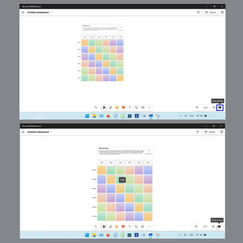

How to Zoom In and Out of the Microsoft Whiteboard App (Windows 11)
This tutorial covers:
How to Zoom In:
How to Center to Selection
How to Zoom Out:
No time to scroll down? Click through this presentation tutorial:
Watch a tutorial video:
How to Zoom In With Click
- Step 1: First open a whiteboard template. In the lower right side click the “Zoom in " button.

How to Zoom In With Keyboard Shortcut
- Method 1: Open a whiteboard template. On the keyboard press Alt + Plus, or the Alt and + keys.
- Method 2: First open a whiteboard template. On the keyboard hold down Shift and press the up arrow key.

How to Zoom In With Menu
- Step 1: Open a whiteboard template. In the lower right side click the “Zoom level” button.
- Step 2: In the menu that opens, click to select a higher zoom percentage.

How to Zoom In With "Fit to Screen"
- Step 1: First open a whiteboard template, then resize the app window to a larger size.
- Step 2: In the lower right click the “Fit to Screen” button. 
How to Center to Selection
- Step 1: Open a whiteboard template. Click to select any object, such as a sticky note.
- Step 2: In the lower right click the “Center to selection” button.

How to Zoom Out With Click
- Step 1: First open a whiteboard template. In the lower right click the “Zoom out” button.
How to Zoom Out With Keyboard Shortcut
- Method 1: Open a whiteboard template. On the keyboard press Alt + Minus or the Alt and - keys.
- Method 2: First open a whiteboard template. On the keyboard hold Shift and press the down arrow key.

How to Zoom Out With Menu
- Step 1: Open a whiteboard template. In the lower right click the “Zoom level” button.
- Step 2: In the menu that opens, click to select a lower zoom percentage.

How to Zoom Out With "Fit to Screen"
- Step 1: First open a whiteboard template, then resize the app window to a smaller size. Double click the top of the window.
- Step 2: In the lower left click the “Fit to Screen” button.

Keep a copy of these instructions for later with this free tutorial PDF.